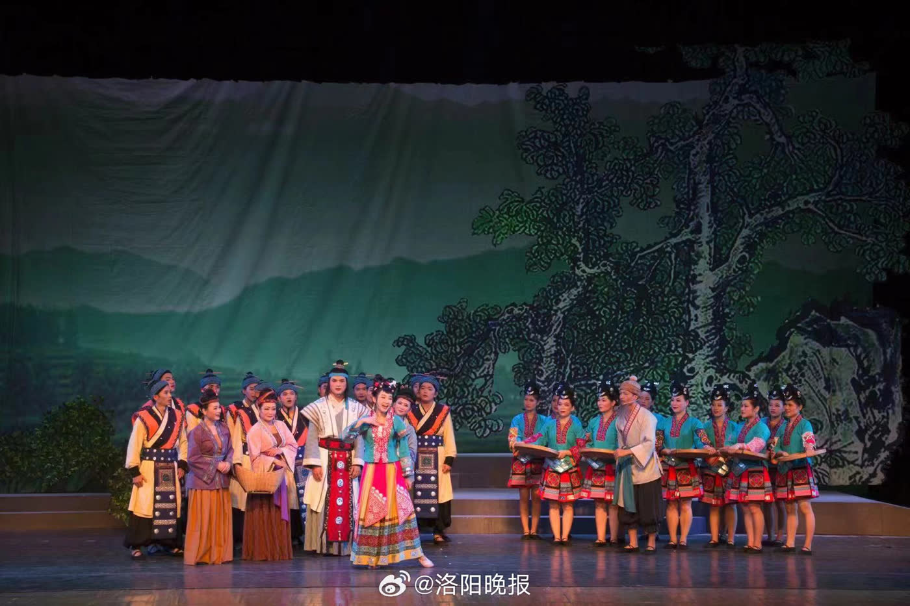
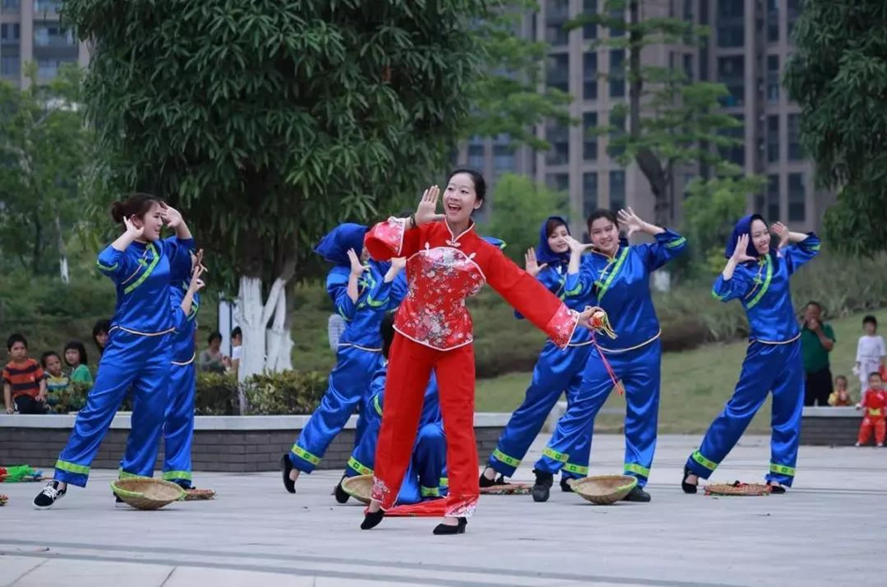
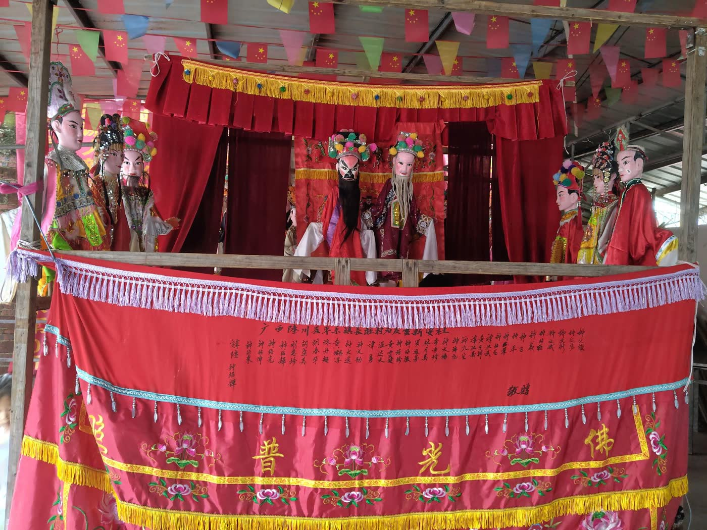

点击看大图
点击看大图
玉林八音
YULIN BAYIN · WIND AND PERCUSSION鼓锣唢呐一齐开场，八音合奏穿街过巷。无论红白喜事、年节庙会，那一声高亢就是玉林人心里最热闹的场面。
- 乐器鼓、锣、钹、唢呐、笛、箫、弦等八类
- 场合婚丧、节庆、庙会
- 风格曲目丰富，气势热烈

唢呐一响，八音穿云；茶山起调，采茶入戏；山歌一句，木偶一台——这些都是玉林人世代相传的生活底色。
非遗在玉林不是展演，而是日常：红白喜事要有八音，田埂山上要对歌，庙会社戏必有木偶。四种声腔，藏着这方水土最真切的喜悲。
点击看大图
鼓锣唢呐一齐开场，八音合奏穿街过巷。无论红白喜事、年节庙会，那一声高亢就是玉林人心里最热闹的场面。

点击看大图从茶山小调唱成一台大戏，扇子一转、矮步一挪，喜怒哀乐都在山野之间，唱的是农事劳作，也是人间悲欢。

点击看大图三月三歌圩起调，一句比兴、一句双关。山野为台、清风为伴，客家人的心事全在歌里，随口成韵却句句见情。

点击看大图十指提线，牵起千年的悲欢离合。唱念做打俱佳，锣鼓一响，乡间的童年记忆便回到眼前。